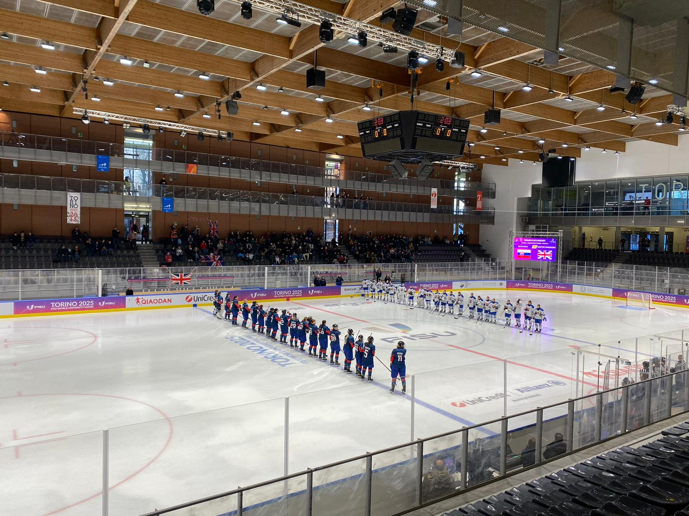

.jpeg)




I work in event organization and logistics, operating in dynamic and complex environments where coordination, precision, and adaptability are essential. Over the years, I have had the opportunity to work across major international events, music festivals, and sport-related projects, contexts in which the work behind the scenes becomes what allows the final experience to take shape.
In my work, I mainly focus on logistical and operational aspects: managing flows, coordinating the workforce, and collaborating with suppliers and technical teams. I enjoy working at the intersection of organization and operations, where every detail contributes to making a larger system function smoothly.
I’m a creative, a thinker, a perfectionist; who enjoys thinking outside the box and finding new solutions to the problems that inevitably arise during the realization of an event. For me, every project is a balance between organization, people, and spaces: the goal is always to ensure that everything runs smoothly, even as complexity grows. And of course, having fun during the process.